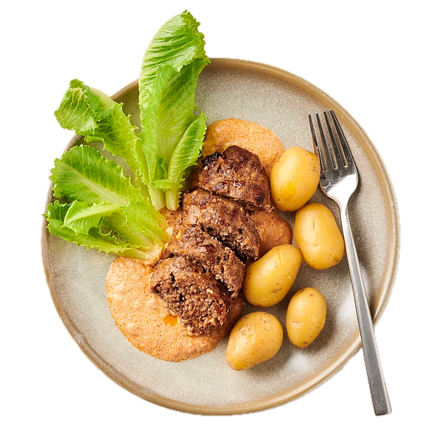

Enkel köttfärslimpa med tomat och rostad lök

En saftig och smakrik köttfärslimpa med tomatpesto och rostad lök, serverad med nykokt potatis och en krämig tomatsås. En klassisk vardagsrätt som är enkel att laga.
Förberedelse: 15 minuter | Tillagning: 20 minuter | Total tid: 35 minuter | Svårighetsgrad: Enkel | 4 portioner
Näringsvärde per portion: 530 kcal | Protein: 33 g
Ingredienser
- 500 g Nötfärs (10%)
- 900 g Fast potatis
- 1,5 dl Rostad lök
- 1 dl Tomatpesto (röd pesto)
- 2,5 dl Flora Mat 4% (matlagningsbas)
- Salt och nymalen svartpeppar
Till servering
- 0,5 st Cosmopolitansallad (eller krispsallad)
- Kokt potatis
Instruktioner
- Sätt ugnen på 225°C.
- Skala och koka potatisen i lättsaltat vatten.
- Blanda nötfärsen med rostad lök och hälften av tomatpeston. Krydda med lite salt och svartpeppar.
- Forma och tryck ut färsen till två smala, platta köttfärslimpor i en liten ugnsform.
- Ställ in formen mitt i ugnen i ca 20 minuter (eller tills limporna är helt genomstekta och har en innertemperatur på 70°C).
- Koka upp Flora Mat 4% tillsammans med resten av tomatpeston i en liten kastrull. Låt sjuda ihop i någon minut och smaka av med salt och peppar.
- Skölj och dela salladen.
- Skiva upp köttfärslimpan och servera tillsammans med den nykokta potatisen, den krämiga tomatsåsen och krispig sallad.